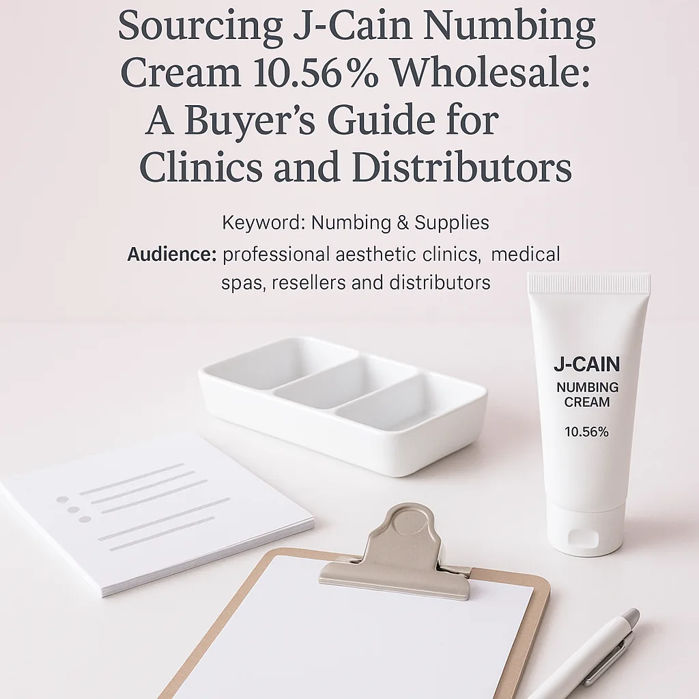
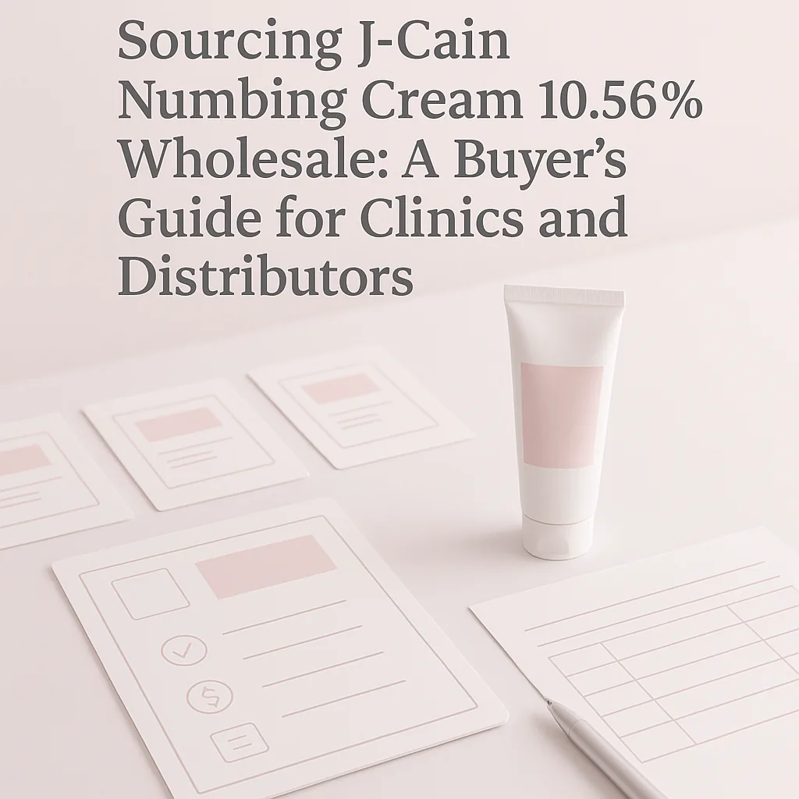

This guide provides practical insights for sourcing J-Cain Numbing Cream 10.56% wholesale, tailored for clinics and distributors.
For clinics and distributors, sourcing J-Cain Numbing Cream 10.56% wholesale can be a daunting task. With various suppliers and product options available, it is essential to make informed decisions that ensure quality and compliance. This guide aims to simplify the sourcing process by providing key insights and practical advice tailored for professional buyers.
Understanding the nuances of wholesale purchasing, including pricing, packaging, and supplier reliability, is crucial for maintaining a steady inventory of this vital product. Clinics and resellers must be equipped with the right knowledge to navigate this landscape effectively.
Key Takeaways
- Identify reputable wholesale suppliers with a proven track record in numbing products.
- Consider product packaging and batch visibility for quality assurance.
- Understand the minimum order quantities (MOQ) and reorder planning needs.
- Evaluate shipping logistics and documentation requirements before placing an order.
- Stay informed about local regulations regarding numbing agents to ensure compliance.
What this guide covers
- Understanding J-Cain Numbing Cream
- Relevant buyer scenarios
- Comparison criteria for sourcing
- Checklist for requesting quotes
- Shipping and documentation considerations
- MOQ and reorder planning
- Frequently asked questions
What buyers should understand first

J-Cain Numbing Cream 10.56% is a topical anesthetic used to temporarily numb the skin. It is commonly utilized in various medical and cosmetic procedures to minimize discomfort for patients. As a professional buyer, it is essential to understand the product's formulation, its intended use, and the importance of sourcing from reliable suppliers to ensure the safety and efficacy of the cream.
When sourcing numbing cream, buyers should be aware of the different packaging options available, as well as the importance of batch and expiry visibility. This information is vital for maintaining compliance and ensuring that the products remain effective for patient use.
Which buyers is this most relevant for?
This guide is particularly relevant for clinics, spas, and distributors that regularly use or supply J-Cain Numbing Cream 10.56%. Clinics performing aesthetic procedures, dermatology practices, and medical spas will find this information beneficial for their procurement strategies. Additionally, resellers looking to stock this product for retail will need to consider their order planning needs and how to evaluate suppliers based on reliability and product quality.
Understanding the specific needs of your business type is crucial in determining the appropriate quantities and variants to order. For instance, a high-volume clinic may require larger quantities, while a small spa might focus on smaller, more manageable orders.
How to compare options before ordering
When comparing options for J-Cain Numbing Cream 10.56% wholesale, consider the following criteria:
- Product Type: Ensure you are sourcing the correct formulation and concentration.
- Brand Reputation: Research the supplier’s brand to gauge quality and reliability.
- Packaging: Evaluate the packaging options for convenience and safety.
- Batch/Expiry Visibility: Confirm that the supplier provides clear information on batch numbers and expiration dates.
- Supplier Communication: Assess the supplier’s responsiveness and willingness to provide necessary documentation.
- Destination Requirements: Understand any specific shipping or customs requirements based on your location.
Buyer checklist before requesting a quote


- Confirm your required quantities and variants of J-Cain Numbing Cream.
- Check local regulations regarding the procurement of numbing agents.
- Gather documentation requirements for your order.
- Identify your preferred packaging options.
- Determine shipping preferences and destination specifics.
- Prepare a list of questions for potential suppliers regarding their products and services.
Shipping, packing and documentation questions
Logistics play a significant role in the sourcing process. When arranging for the shipment of J-Cain Numbing Cream, consider the following:
- What are the available shipping methods, and how do they affect delivery times?
- What packaging options are provided to ensure product integrity during transit?
- What documentation is required for shipping, and will the supplier provide it?
- Are there any customs regulations that need to be addressed for your location?
- How will the supplier handle any issues related to shipping delays or product damage?
MOQ, quotation and reorder planning
When preparing to source J-Cain Numbing Cream 10.56% wholesale, it is essential to understand the minimum order quantities (MOQ) set by suppliers. This will impact your procurement strategy and inventory management. Additionally, consider the following:
- Plan your order quantities based on your clinic’s or spa’s usage patterns.
- Identify any product variants you may need to stock.
- Provide clear destination details to the supplier for accurate shipping quotes.
- Establish a reorder plan to maintain consistent inventory levels.
SOLA can help confirm current availability and provide you with a wholesale quotation tailored to your needs.
FAQ
What is J-Cain Numbing Cream used for?
J-Cain Numbing Cream is a topical anesthetic used to temporarily numb the skin for various medical and cosmetic procedures.
How do I find a reliable wholesale supplier?
Research suppliers, check reviews, and assess their communication and documentation practices to find a reliable partner.
What should I consider regarding shipping?
Evaluate shipping methods, packaging, and any customs requirements that may affect delivery times and product integrity.
What is the typical MOQ for J-Cain Numbing Cream?
The MOQ varies by supplier, so it's essential to confirm this information before placing an order.
How can SOLA assist with my order?
SOLA can provide guidance on sourcing, confirm availability, and offer wholesale quotations tailored to your needs.
Contact SOLA for wholesale quotation via WhatsApp.
Planning a wholesale request?
Send product names, quantities and destination for a tailored discussion.
Contact SOLA on WhatsApp →General educational content for professional buyers. Not medical, legal, regulatory or import advice.